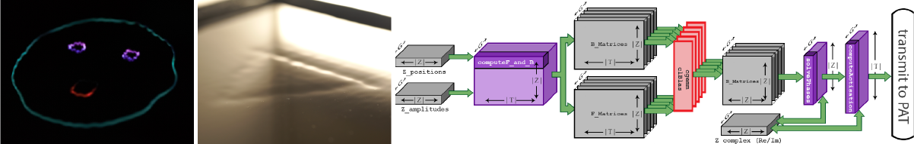

Diego Martinez Plasencia, Ryuji Hirayama, Roberto Montano-Murillo, and Sriram Subramanian, ACM Transactions on Graphics 39, 138 (2020) [Paper link] and ACM SIGGRAPH 2020 Technical Papers (2020) [Paper link].
Phased Arrays of Transducers (PATs) allow accurate control of ultrasound fields, with applications in haptics, levitation (i.e. displays) and parametric audio. However, algorithms for multi-point levitation or tactile feedback are usually limited to computing solutions in the order of hundreds of sound-fields per second, preventing the use of multiple high-speed points, a feature that can broaden the scope of applications of PATs. We present GS-PAT, a GPU multi-point phase retrieval algorithm, capable of computing 17K solutions per second for up to 32 simultaneous points in a mid-end consumer grade GPU (NVidia GTX 1660). We describe the algorithm and compare it to state of the art multi-point algorithms used for ultrasound haptics and levitation, showing similar quality of the generated sound-fields, and much higher computation rates. We then illustrate how the shift in paradigm enabled by GS-PAT (i.e. real-time control of several high-speed points) opens new applications for PAT technologies, such as in volumetric fully coloured displays, multi-point spatio-temporal tactile feedback, parametric audio and simultaneous combinations of these modalities.